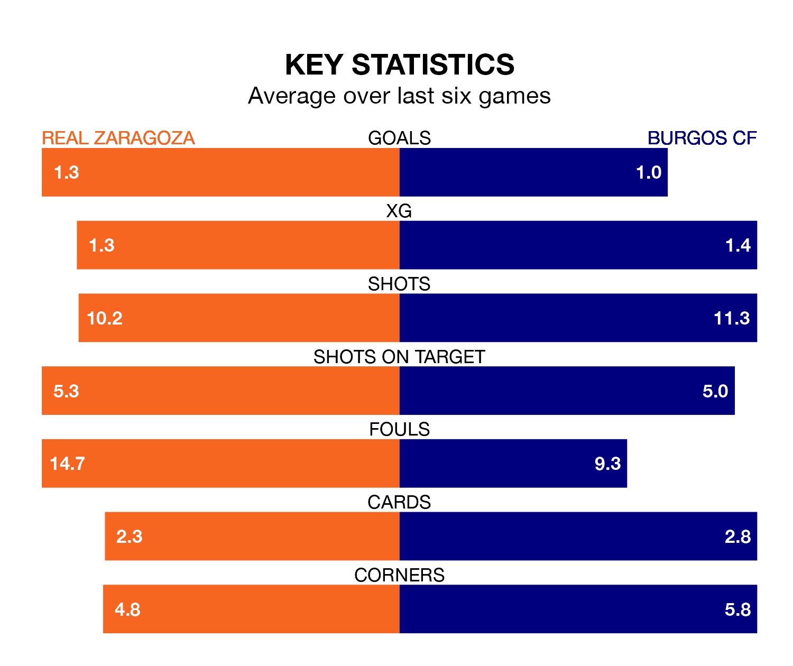

Real Zaragoza host Burgos CF on Sunday at Estadio de la Romareda in the Segunda División.
In their last league match, on April 27, Zaragoza drew with Leganés 1-1 away, with their goal scored by Maikel Mesa Piñero.
Burgos also drew, 2-2 at home against SD Amorebieta, with Curro Sánchez and Fer Niño on the scoresheet.
With 36 goals in 37 games so far this season, Zaragoza are scoring at below the league average rate with 1.0 goals per game. But they are conceding fewer than average too, letting in 35 goals at a rate of 0.9 per game.
Burgos, meanwhile, are above average scorers, with 1.2 goals per game, compared to a league average of 1.1. They have conceded 1.3 goals per game.
In the last 10 years, Zaragoza and Burgos have played each other on six occasions. Zaragoza won two of them and they drew four times.
On average, Zaragoza scored 1.0 goal and Burgos 0.5 in those matches.
Their last meeting was on October 30, when they played out a 1-1 draw.
With José Antonio Caro Díaz between the sticks, the away side can rely on one of the league's safest pair of hands. He has kept 14 clean sheets in his 37 appearances this season in the Segunda División.
In the hosts' net, Cristian Darío Álvarez has five clean sheets in 10 games.
Zaragoza are in mixed form in the Segunda División, with two wins and three draws from their last six games.
With a win and two draws over that period, Burgos's form is worse – they have taken five points from 18, compared to Zaragoza's nine.
The home team are 13th in the table after 37 games, of which they have won 11 and drawn 13, earning 46 points.
Burgos are three places ahead of Zaragoza in 10th, with 15 wins and nine draws putting them on 54 points.
Updated: 10:44 (UTC), 30/04/24